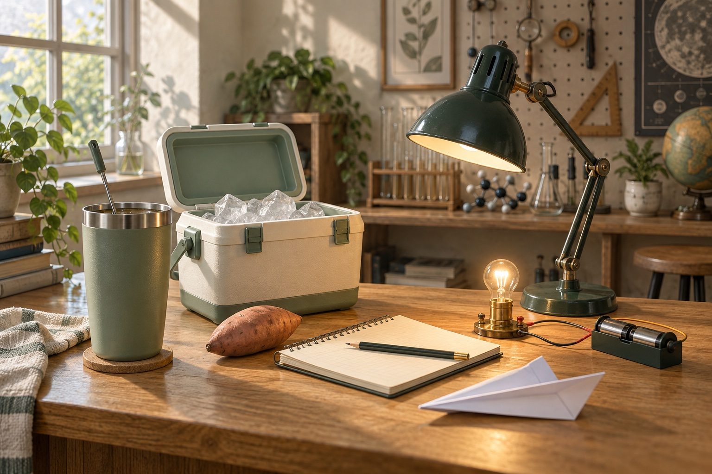

烤地瓜：把「好吃」說清楚
先用中心溫度規劃加熱歷程，再把硬度、糖度、失重與盲評分開量。相同中心溫度，不保證相同口感。
地瓜糖化研究 ↗INQUIRY STUDIO 生活探究
從一杯熱飲、一雙鞋、一架紙飛機開始。
親手操作，留下自己的證據。
13 個工作臺 · 免登入 · 紀錄留在自己的裝置

先做比較，再談解釋。改變一個條件、選擇量測時刻、保留失敗試次，最後回到實物檢查模型。
這裡是可操作的 2.5D 模擬工作臺，適合練習變因控制、操作型定義與數據判讀。模型生成的資料不是生活器材的實測，也不能用來獨立證明模型本身。每個工作臺「說明」裡都有參考來源、模型範圍與實物探究建議。
CHOOSE A QUESTION
目前沒有符合的主題。試試較短的關鍵字，或切換「全部」。
BACK TO THE REAL WORLD
先用中心溫度規劃加熱歷程，再把硬度、糖度、失重與盲評分開量。相同中心溫度，不保證相同口感。
地瓜糖化研究 ↗比較相同時間的剩冰量，也記錄箱內空間、材料用量和開蓋歷程。把生活需求變成設計限制。
保冰盒實作案例 ↗記錄初速、仰角與完整落點分布，保留失速與偏航。研究可重複的設計，也研究投擲的人。
NASA 紙飛機活動 ↗